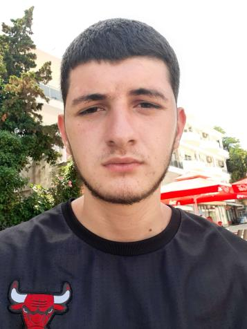

Majlind Krasniqi, ka lindur me 2002 ne Gjakove,Republiken e Kosoves.
Shkollen fillore te mesme te ulet e kreu ne vendlindje,ndersa shkollen e mesme ne Gjimnazin Hajdar Dushi ne Gjakove.
Aktualisht eshte duke ndjekur bootcamp-it Full-Stack Developer në shkollën digjitale PËR PROGRAMERA
"But how could you live and have no story to tell?" Fyodor Dostoevski